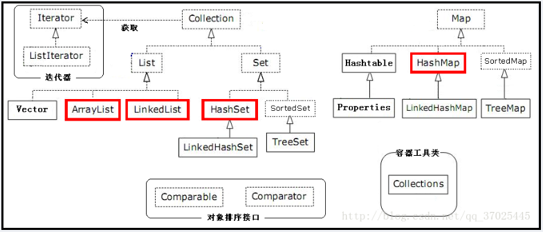
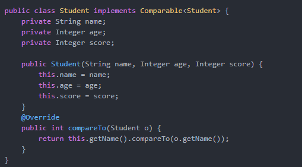

1、集合分类

2.集合特性比较：线程安全角度，有序无序角度（排序算法角度）
- 线程安全角度：List接口下的Vector，Map接口下的ConcurrentHashMap ， HashTable
- 有序角度：Collection接口下List接口，以及本身无序但是支持有序的Map接口下的TreeMap，Set接口下的TreeSet
- 是否允许重复：Collection接口下List接口实现类均允许重复，Set接口实现类不允许重复，Map中key值不允许重复
- Map接口实现比较：HashMap支持key值为null，HashTable不支持，但是HashTable是线程安全的（通过synchronized实现）
- 线程安全实现方式角度：HashTable，Vector均是由synchronized实现的，ConcurrentHashMap是由分段锁实现的
参考博客：深入理解ConcurrentHashMap原理分析以及线程安全性问题
3.Collecions工具类使用
一种方式：高级for循环
@Test
public void test() {
Map map = new HashMap();
map.put("1","aaa");
map.put("2","bbb");
map.put("3","ccc");
//迭代遍历Map集合的第一种方式
for(Object obj : map.keySet())
{
String key = (String) obj;
//取到每一个key值
String value = (String) map.get(key);
System.out.println(key + "=" + value);
}
}
3.集合排序之Comparable和Comparator
- 待排序类实现Comparable接口。例如以下根据Student类的name属性来进行排序

直接使用Collections.sort(List<T> list)方法来进行排序